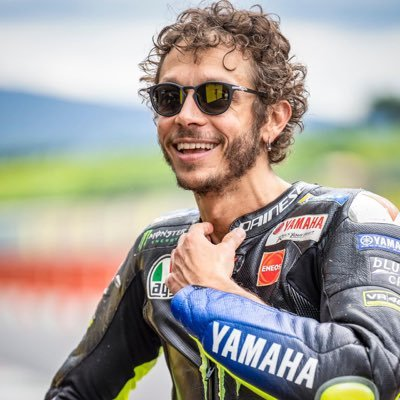
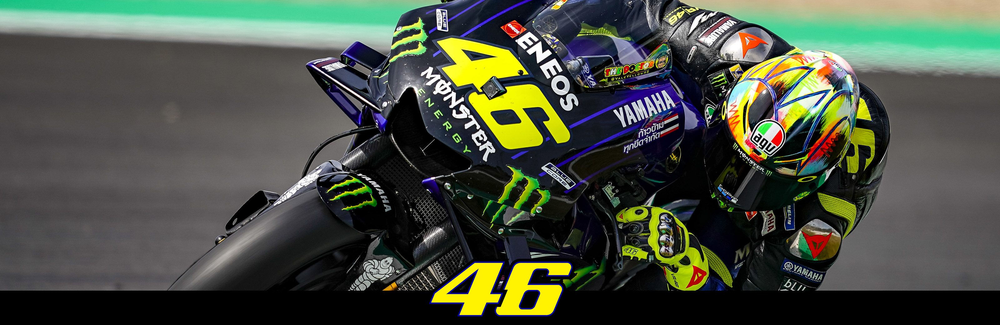

Welcome to the blog of Dhruop Kumar Das
MOTORSPORTS
Monster Energy Yamaha

Yamaha Motor Racing or Yamaha Factory Racing is the official Italian-Japanese factory team of Yamaha in MotoGP.
The team was founded in 1999 following the retirement of Wayne Rainey, who had run a factory-supported team in the 500 cc class for the previous two years, with Kenny Roberts and Giacomo Agostini having run their own works supported teams before him. The team was originally based in the Netherlands but was relocated in Italy in 2002.
Valentino Rossi VR46

Valentino Rossi is an Italian professional motorcycle road racer and multiple MotoGP World Champion. Rossi is widely considered one of the greatest motorcycle racers of all time, with nine Grand Prix World Championships to his name – seven of which are in the premier class.


Rossi is also the only road racer to have competed in 400 or more Grands Prix. He has ridden with number 46 his entire career, including the years when he was defending his title.
After graduating to the premier class in 2000, Rossi won the 500cc World Championship and 8 Hours of Suzuka with Honda in 2001, the MotoGP World Championships (also with Honda) in 2002 and 2003 and continued his streak of back-to-back championships by winning the 2004 and 2005 titles after leaving Honda to join Yamaha. All of those titles were won in a dominant manner, being decided before the final round on all occasions. He lost the 2006 title with a crash in the final round at Valencia, ceding the title to his former Honda teammate Nicky Hayden. In 2007 Rossi and Yamaha were of no match to a dominant Casey Stoner on a Ducati, and Rossi ultimately finished a then career-low third overall.
Rossi regained the title in 2008 following several tight duels with title defendant Stoner and retained it in 2009. After a 2010 marred by a broken leg and no title challenge, Rossi left Yamaha to join Ducati for the 2011 season. Rossi replaced Stoner at Ducati, who went on to win the 2011 title with Honda, while Rossi endured a difficult spell with the Italian marque. It was confirmed in 2012 that he would rejoin Yamaha for the 2013 and 2014 seasons after Rossi suffered two winless seasons while at Ducati.
On his return to Yamaha, he finished fourth in the standings in 2013. The following that up with three successive runner-up positions in 2014, 2015 and 2016. Rossi led the championship for the vast majority of the 2015 season before being surpassed by team colleague Jorge Lorenzo in the final round at Valencia, with Rossi losing out as a result of a grid penalty sustained for a controversial clash with Honda rider Marc Márquez in the previous Malaysian round. During Rossi's second stint at Yamaha he has won several races although not enjoyed the levels of success earlier in his career. After Rossi won the 2017 Dutch TT, a winless streak of multiple years followed, although he managed to finish third in the 2018 championship even during this period.
Rossi is currently contracted to race until the end of the 2020 season, when he will be 41 years old. Although it has been confirmed Rossi will leave the Factory Yamaha team at the end of 2020, Yamaha has already offered Rossi a factory bike and support with the manufacturer in another team. Rossi is currently in talks with the Petronas Yamaha Racing Team for the 2021 season.
He is also a team owner of junior-class team Sky Racing Team by VR46 which competes in Moto2 and Moto3.